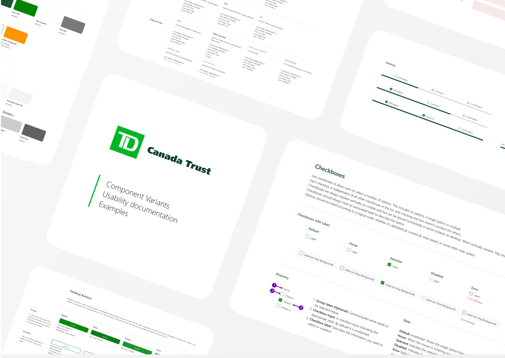

<script type="text/javascript" src="./assets/js/controllers/TDController.js"></script>
<article id="case_container">
	<div id="section1" class="case_header">
		<div class="case_header_img_container">
			
		</div>
		<div class="case_header_box">
			<h1>TD Insurance</h1>
			<p>
                TD Insurance Canada is a subsidiary of TD Bank Group, one of Canada's largest financial institutions. TD Insurance offers a range of insurance products and services to individuals and businesses in Canada, including home insurance, auto insurance, travel insurance, and more.
            </p>
			<p>
                <b>Roles:</b> Design System, UX/UI Design 
            </p>
			<p class=>
                <b>Tools:</b> Adobe XD, Figma
            </p>
            <p class="header_box_last_p">
                <b>Duration:</b> Oct 2021 - Dec 2021
            </p>
		</div>
	</div>

	<div class="case_container">
        <div class="case_title_description_container">
            <div class="case_title">
                <h3 class="case_subsection_title onmo_border_bottom_color">My Role</h3>
            </div>
            <div class="case_description">
                <p>
                    During my time at Avanade, I had the privilege to work with TD Insurance, one of Canada’s largest financial institutions.  As I embarked on integrating various features into their systems, I immediately noticed several key issues:
                </p>
            </div>
            <div class="clear"></div>
        </div>

        <div class="case_title_description_container">
            <div class="case_title">
                <h3 class="case_subsection_title onmo_border_bottom_color">The Challenges</h3>
            </div>
            <div class="case_description">
                <ol>
					<li>The <b>absence of a centralized resource</b> for design components.</li>
					<li>The <b>design files were inconsistent</b> with discrepancies in colors, styles, and elements such as CTA buttons, input fields, and typography. This inconsistency posed challenges for designers, including myself, as we were unsure about the appropriate usage of these components.</li>
					<li><b>Lack of design documentation</b>: The absence of design documentation further compounded the problem. Without clear guidelines and instructions, designers were left to navigate the design process independently, leading to ambiguity and potential errors.</li>
				</ol>
                <p>These issues collectively resulted in redundant work and wasted time as designers struggled to align their efforts and recreate components that could have been readily available</p>
            </div>
        </div>

        <div class="case_title_description_container">
            <div class="case_title">
                <h3 class="case_subsection_title onmo_border_bottom_color">Process</h3>
            </div>
            <div class="case_description">
                <p>Recognizing the impact these challenges had on productivity, I proactively proposed and took the lead in implementing a comprehensive design system. Here's an overview of the steps I took:</p>               
                <ol>
					<li><b>Conducted a site audit</b>: I thoroughly assessed the existing TD Insurance website, the TDI masterdeck, the TD Emerald design system, and other relevant design files. This audit helped me identify gaps, inconsistencies, and areas for improvement.</li>
					<li><b>Created a design system on Adobe XD</b>: I established a design system using Adobe XD. This system served as a centralized repository for design components, ensuring consistency and efficiency in future design projects.</li>
					<li><b>Leveraged Figma for future readiness</b>: Recognizing the need for scalability and adaptability, I used Figma to create a comprehensive design system that catered to different variants and responsive components. This ensured that the design system was future-ready and could accommodate evolving requirements.</li>
                    <li><b>Modernized the existing design system</b>: I collaborated closely with the teams at TD Insurance to modernize and update the existing design system. This involved refining and enhancing design components, aligning them with current design trends, and ensuring consistency across the board.</li>
                    <li><b>Wrote detailed documentation</b>: With the help of competitive analysis, I documented each component in the design system. This documentation included use cases, examples, component anatomy, specifications, and other relevant details. This detailed documentation provides clear guidelines and instructions for designers and developers.</li>
				</ol>
                <p>
                    These issues collectively resulted in redundant work and wasted time as designers struggled to align their efforts and recreate components that could have been readily available
                </p>
            </div>
        </div>

		<div class="case_title_description_container">
            <div class="case_title">
                <h3 class="case_subsection_title" id="section5">
                    <b>REFLECTION</b>
                </h3>
            </div>
            <div class="case_description case_reflection">
                <p>
                    The implementation of the design system at TD Insurance resulted in significant positive outcomes for the teams involved. Here are some notable achievements:
                </p>
                <ol>
                    <li>
                        <b>Positive feedback from teams</b>: The design system received positive feedback from designers, developers, and other stakeholders at TD Insurance.
                    </li>
                    <li>
                        <b>Time savings</b>: Prior to its implementation, each team would spend approximately 3 days at the beginning of every project to just to collect references and create new components (not counting the lengthy discussions to determine which components to use during regular design meetings) . With the design system in place, designers no longer needed to reinvent the wheel for each project. They could easily access and utilize the pre-defined design components, resulting in significant time savings. Overall, the design system could save more than 3 months of time each year for the designers at TD Insurance (Calculation: 4 projects *8 teams *3 days=96 days).
                    </li>
                </ol>                    
                <p>
                    Due to the constraints of a non-disclosure agreement (NDA), I am unable to share the design system directly in this context. However, if you are interested in learning more or viewing the design system, please feel free to contact me directly.
                </p>
                <div class="other_cases_link_container">
                    <a class="other_case_link" href="/rob0">rob0</a>
                    <span class="case_link_separator">/</span>
                    <a class="other_case_link" href="/mortgage">Mortgage Cadence</a>
                    <span class="case_link_separator">/</span>
                    <a class="other_case_link selected_case" href="/td">TD</a>
                    <span class="case_link_separator">/</span>
                    <a class="other_case_link" href="/onmod">OnMo Design System</a>
                    <span class="case_link_separator">/</span>
                    <a class="other_case_link" href="/onmoc">OnMo Gaming Platform</a>
                    <span class="case_link_separator">/</span>
                    <a class="other_case_link" href="/lowes">Lowe's</a>
                </div>
            </div>
        </div>
</article>